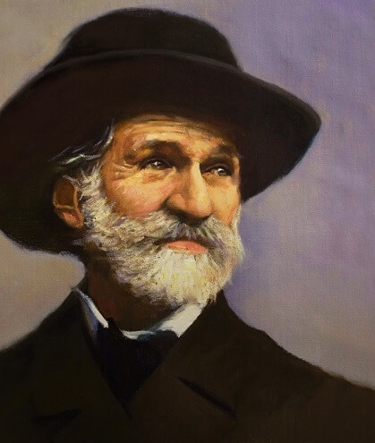
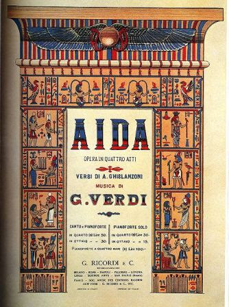

 (Roncole, actual Italia, 1813 - Milán, 1901) Compositor italiano. Coetáneo de Wagner, y como él un compositor eminentemente dramático, Verdi fue el gran dominador de la escena lírica europea durante la segunda mitad del siglo XIX. Su arte, empero, no fue el de un revolucionario como el del alemán, antes al contrario, para él toda renovación debía buscar su razón en el pasado. En consecuencia, aun sin traicionar los rasgos más característicos de la tradición operística italiana, sobre todo en lo concerniente al tipo de escritura vocal, consiguió dar a su música un sesgo nuevo, más realista y opuesto a toda convención no justificada.
Nacido en el seno de una familia muy modesta, tuvo la fortuna de contar desde fecha temprana con la protección de Antonio Barezzi, un comerciante de Busseto aficionado a la música que desde el primer momento creyó en sus dotes. Gracias a su ayuda, el joven Giuseppe Verdi pudo desplazarse a Milán con el propósito de estudiar en el Conservatorio, lo que no logró porque, sorprendentemente, no superó las pruebas de acceso.
Tras estudiar con Vincenzo Lavigna, quien le dio a conocer la música italiana del pasado y la alemana de la época, fue nombrado maestro de música de Busseto en 1836, el mismo año en que contrajo matrimonio con la hija de su protector, Margherita Barezzi. El éxito que en 1839 obtuvo en Milán su primera ópera, Oberto, conte di San Bonifacio, le procuró un contrato con el prestigioso Teatro de la Scala. Sin embargo, el fracaso de su siguiente trabajo, Un giorno di regno, y, sobre todo, la muerte de su esposa y sus dos hijos, lo sumieron en una profunda depresión en la que llegó a plantearse el abandono de la carrera musical.
No lo hizo: la lectura del libreto de Nabucco le devolvió el entusiasmo por la composición. La partitura, estrenada en la Scala en 1842, recibió una acogida triunfal, no sólo por los innegables valores de la música, sino también por sus connotaciones políticas, ya que, en aquella Italia oprimida y dividida de la época, el público se sintió identificado con el conflicto recreado en el drama.
 Con este éxito, Verdi no sólo consiguió su consagración como compositor, sino que también se convirtió en un símbolo de la lucha patriótica por la unificación política del país. I lombardi alla prima Crociata y Ernani participaron de las mismas características. Son éstos los que el compositor calificó como sus «años de galeras», en los cuales, por sus compromisos con los empresarios teatrales, se vio obligado a escribir sin pausa una ópera tras otra.
Esta situación empezó a cambiar a partir del estreno, en 1851, de Rigoletto, y, dos años más tarde, de Il Trovatore y La Traviata, sus primeras obras maestras. A partir de este momento compuso sólo aquello que deseaba componer. Su producción decreció en cuanto a número de obras, pero aumentó proporcionalmente en calidad. Y mientras sus primeras composiciones participaban de lleno de la ópera romántica italiana según el modelo llevado a su máxima expresión por Gaetano Donizetti, las escritas en este período se caracterizaron por la búsqueda de la verosimilitud dramática por encima de las convenciones musicales.
Aida (1871) es ilustrativa de esta tendencia, pues en ella desaparecen las cabalette, las arias se hacen más breves y cada vez más integradas en un flujo musical continuo -que no hay que confundir con el tejido sinfónico propio del drama musical wagneriano-, y la instrumentación se hace más cuidada. Prácticamente retirado a partir de este título, aún llegó a componer un par de óperas más, ambas con libretos de Arrigo Boito sobre textos de Shakespeare: Otello y Falstaff, esta última una encantadora ópera cómica compuesta cuando el músico frisaba ya los ochenta años. Fue su canto del cisne.
{kind=link}
{kind=link}